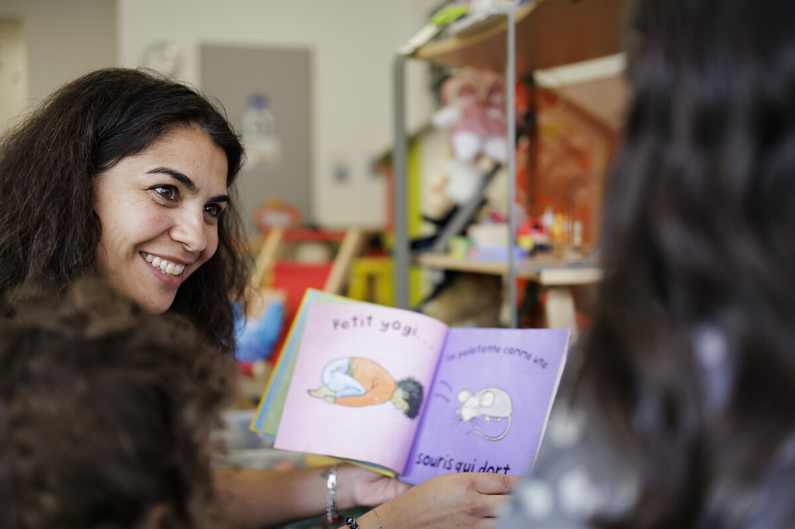
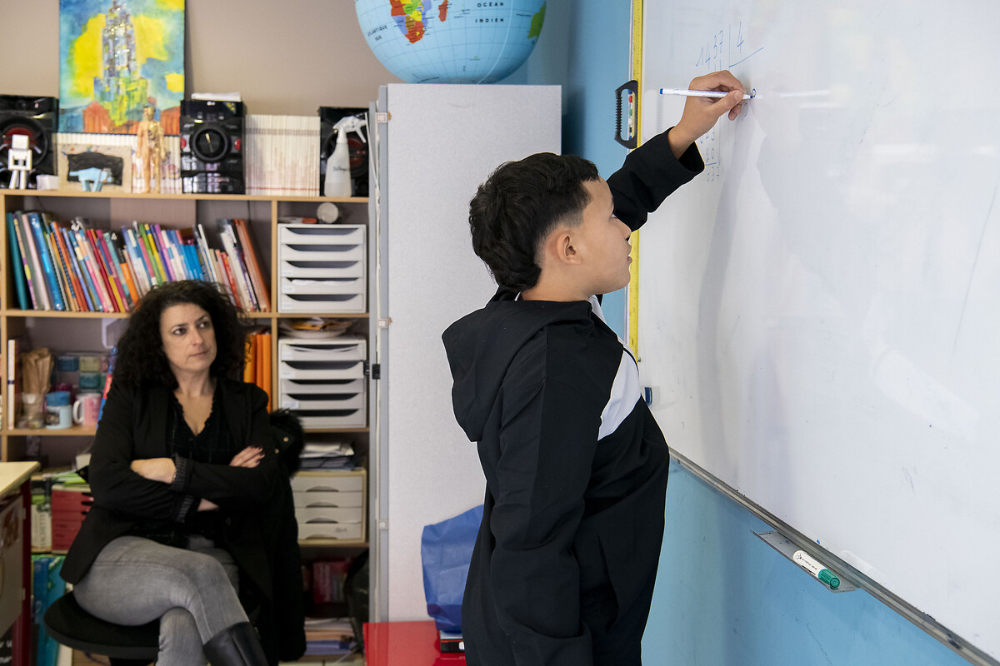

Actions d’aide pour l’éducation populaire
L’Armée du Salut déploie une variété d’actions pour soutenir les enfants et favoriser l’éducation populaire. Nous proposons des crèches stimulant les échanges intergénérationnels, permettant aux tout-petits d’évoluer dans un cadre chaleureux.
Notre résidence maternelle accompagne les jeunes mères confrontées à des fragilités sociales, familiales ou psychologiques.
À travers nos maisons d’enfants et foyers, nous accueillons des jeunes rencontrant des difficultés familiales, en leur offrant un environnement stable, bienveillant et sécurisant.

Activités pour aider les jeunes à grandir
Nos Instituts thérapeutiques éducatifs et pédagogiques (ITEP) accompagnent les enfants présentant des troubles du comportement et de l’apprentissage.
Notre centre social favorise l’égalité dans l'accès à l’éducation, aux savoirs et aux loisirs, renforçant ainsi la cohésion sociale et l’inclusion.
Nous organisons également colonies, camps et activités de scoutisme afin de développer :
• l’autonomie
• la confiance en soi
• le sens du collectif

Les actions d’aide à l’enfance de l’Armée du Salut
Découvrez l’ensemble des initiatives mises en œuvre afin de soutenir, protéger et accompagner l’enfance.
Voir plus